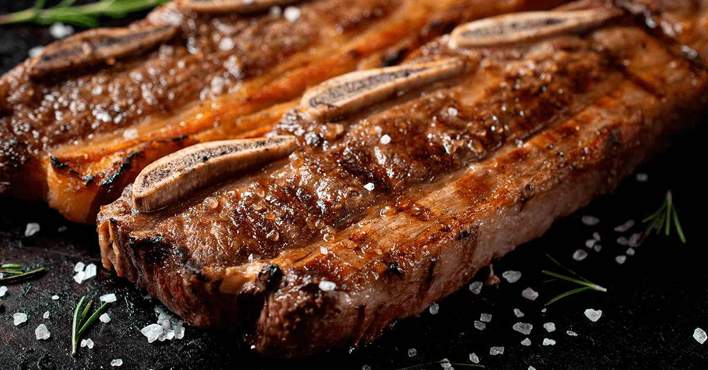

When we grill beef ribs in North America, we typically use cuts that require a long, slow roast and lots of basting for tender and flavorful results. In Argentina, ribs are cut differently—crosswise across the bone—so that each piece has larger, thin portions of rib meat interspersed with smaller pieces of bone. When the rib meat is butchered this way, there is less connective tissue and the meat can cook quickly on a very hot grill without becoming tough. This cut is often called "flanken-style" in U.S. supermarkets and is popular for Korean barbecue ribs.
In Argentina, these flanken-style ribs are treated simply with only a generous seasoning of salt before they go on the grill (ideally with some hardwood smoke for flavor). The ribs cook in 10 to 12 minutes, perfect for when you need dinner quickly. They are excellent when paired with garlicky chimichurri sauce.
Ribs are one of the first foods served from the grill in a traditional asado or grilled feast, but these ribs make a great main course too, served with grilled plantain and coconut rice, for example.